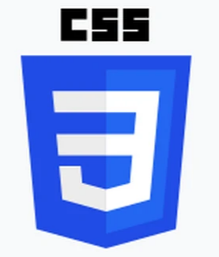
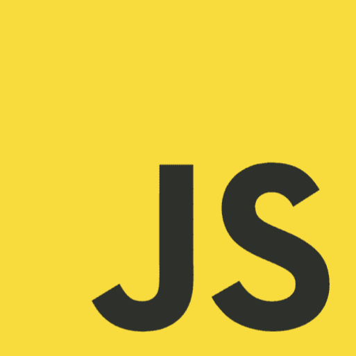

O QUE É LINGUAGEM DE PROGRAMAÇÃO?
Linguagem de Programação é uma linguagem escrita e
formal que especifica um conjunto de instruções e
regras usadas para gerar programas (software).
Um software pode ser desenvolvido para rodar em
um computador, dispositivo móvel ou em qualquer
equipamento que permita sua execução.
LINGUAGENS
HTML

HTML (Linguagem de Marcação de Hipertexto) é o código que você usa para estruturar uma página web e seu conteúdo. Por exemplo, o conteúdo pode ser estruturado em parágrafos, em uma lista com marcadores ou usando imagens e tabelas.
CSS
CSS é chamado de linguagem Cascading Style Sheet e é usado para estilizar elementos escritos em uma linguagem de marcação como HTML. O CSS separa o conteúdo da representação visual do site.
JavaScript
JavaScript é uma linguagem de programação que permite a você criar conteúdo que se atualiza dinamicamente, controlar múltimídias, imagens animadas, e tudo o mais que há de interessante. Ok, não tudo, mas é maravilhoso o que você pode efetuar com algumas linhas de código JavaScript.
Git/GitHub
No geral, o GitHub é um serviço baseado em
nuvem que hospeda um sistema de controle de
versão (VCS) chamado Git. Ele permite que os
desenvolvedores colaborem e façam mudanças em
projetos compartilhados enquanto mantêm um registro
detalhado do seu progresso.
CURIOSIDADES
1°
JavaScript é frequentemente confundido com a
linguagem de programação Java, mas, na verdade,
são duas linguagens completamente diferentes.
A semelhança no nome foi uma jogada de marketing
da Netscape, uma empresa por trás do JavaScript,
para capitalizar a popularidade do Java na época.
2°
As primeiras versões do HTML permitiam somente
18 tags de linguagem. Com a evolução ao longo do
tempo e das versões, o HTML5, que temos atualmente,
conta com mais de 100 tags disponíveis para uso.
3°
A tag tem uma função primordial nos
nossos documentos HTML. Ela será o início de todo código e
arquivo HTML que você for criar e será responsável por informar ao
navegador que o documento é do tipo HTML5.
Então, apesar de parecer uma tag, ela não é uma tag HTML,
mas sim uma instrução que serve para informar ao navegador
que esse documento que ele está abrindo é um arquivo HTML5.
4°
A sigla "CSS" significa "Cascading Style Sheets" que em
português significa: "Folhas de estilo em cascata".
5°
A palavra "Git" é uma gíria britânica que significa
"pessoa desagradável" ou "pessoa estúpida".
Linus Torvalds escolheu esse nome como uma brincadeira,
referindo-se às dificuldades que ele teve com outras
ferramentas de controle de versão.